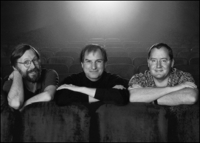

PIXAR
Technology Meets Art

Ed Catmull, Steve Jobs, and John Lasseter, 1999
When Jobs was losing his footing at Apple in the summer of 1985, he went for a walk with Alan Kay, who had been at Xerox PARC and was then an Apple Fellow. Kay knew that Jobs was interested in the intersection of creativity and technology, so he suggested they go see a friend of his, Ed Catmull, who was running the computer division of George Lucas's film studio. They rented a limo and rode up to Marin County to the edge of Lucas's Skywalker Ranch, where Catmull and his little computer division were based. "I was blown away, and I came back and tried to convince Sculley to buy it for Apple," Jobs recalled. "But the folks running Apple weren't interested, and they were busy kicking me out anyway."
The Lucasfilm computer division made hardware and software for rendering digital images, and it also had a group of computer animators making shorts, which was led by a talented cartoon-loving executive named John Lasseter. Lucas, who had completed his first Star Wars trilogy, was embroiled in a contentious divorce, and he needed to sell off the division. He told Catmull to find a buyer as soon as possible.
After a few potential purchasers balked in the fall of 1985, Catmull and his colleague Alvy Ray Smith decided to seek investors so that they could buy the division themselves. So they called Jobs, arranged another meeting, and drove down to his Woodside house. After railing for a while about the perfidies and idiocies of Sculley, Jobs proposed that he buy their Lucasfilm division outright. Catmull and Smith demurred: They wanted an investor, not a new owner. But it soon became clear that there was a middle ground: Jobs could buy a majority of the division and serve as chairman but allow Catmull and Smith to run it.
"I wanted to buy it because I was really into computer graphics," Jobs recalled. "I realized they were way ahead of others in combining art and technology, which is what I've always been interested in." He offered to pay Lucas $5 million plus invest another $5 million to capitalize the division as a stand-alone company. That was far less than Lucas had been asking, but the timing was right. They decided to negotiate a deal.
The chief financial officer at Lucasfilm found Jobs arrogant and prickly, so when it came time to hold a meeting of all the players, he told Catmull, "We have to establish the right pecking order." The plan was to gather everyone in a room with Jobs, and then the CFO would come in a few minutes late to establish that he was the person running the meeting. "But a funny thing happened," Catmull recalled. "Steve started the meeting on time without the CFO, and by the time the CFO walked in Steve was already in control of the meeting."
Jobs met only once with George Lucas, who warned him that the people in the division cared more about making animated movies than they did about making computers. "You know, these guys are hell-bent on animation," Lucas told him. Lucas later recalled, "I did warn him that was basically Ed and John's agenda. I think in his heart he bought the company because that was his agenda too."
The final agreement was reached in January 1986. It provided that, for his $10 million investment, Jobs would own 70% of the company, with the rest of the stock distributed to Ed Catmull, Alvy Ray Smith, and the thirty-eight other founding employees, down to the receptionist. The division's most important piece of hardware was called the Pixar Image Computer, and from it the new company took its name.
For a while Jobs let Catmull and Smith run Pixar without much interference. Every month or so they would gather for a board meeting, usually at NeXT headquarters, where Jobs would focus on the finances and strategy. Nevertheless, by dint of his personality and controlling instincts, Jobs was soon playing a stronger role. He spewed out a stream of ideas—some reasonable, others wacky—about what Pixar's hardware and software could become. And on his occasional visits to the Pixar offices, he was an inspiring presence. "I grew up a Southern Baptist, and we had revival meetings with mesmerizing but corrupt preachers," recounted Alvy Ray Smith. "Steve's got it: the power of the tongue and the web of words that catches people up. We were aware of this when we had board meetings, so we developed signals—nose scratching or ear tugs—for when someone had been caught up in Steve's distortion field and he needed to be tugged back to reality."
Jobs had always appreciated the virtue of integrating hardware and software, which is what Pixar did with its Image Computer and rendering software. It also produced creative content, such as animated films and graphics. All three elements benefited from Jobs's combination of artistic creativity and technological geekiness. "Silicon Valley folks don't really respect Hollywood creative types, and the Hollywood folks think that tech folks are people you hire and never have to meet," Jobs later said. "Pixar was one place where both cultures were respected."
Initially the revenue was supposed to come from the hardware side. The Pixar Image Computer sold for $125,000. The primary customers were animators and graphic designers, but the machine also soon found specialized markets in the medical industry (CAT scan data could be rendered in three-dimensional graphics) and intelligence fields (for rendering information from reconnaissance flights and satellites). Because of the sales to the National Security Agency, Jobs had to get a security clearance, which must have been fun for the FBI agent assigned to vet him. At one point, a Pixar executive recalled, Jobs was called by the investigator to go over the drug use questions, which he answered unabashedly. "The last time I used that ... ," he would say, or on occasion he would answer that no, he had actually never tried that particular drug.
Jobs pushed Pixar to build a lower-cost version of the computer that would sell for around $30,000. He insisted that Hartmut Esslinger design it, despite protests by Catmull and Smith about his fees. It ended up looking like the original Pixar Image Computer, which was a cube with a round dimple in the middle, but it had Esslinger's signature thin grooves.
Jobs wanted to sell Pixar's computers to a mass market, so he had the Pixar folks open up sales offices—for which he approved the design—in major cities, on the theory that creative people would soon come up with all sorts of ways to use the machine. "My view is that people are creative animals and will figure out clever new ways to use tools that the inventor never imagined," he later said. "I thought that would happen with the Pixar computer, just as it did with the Mac." But the machine never took hold with regular consumers. It cost too much, and there were not many software programs for it.
On the software side, Pixar had a rendering program, known as Reyes (Renders everything you ever saw), for making 3-D graphics and images. After Jobs became chairman, the company created a new language and interface, named RenderMan, that it hoped would become a standard for 3-D graphics rendering, just as Adobe's PostScript was for laser printing.
As he had with the hardware, Jobs decided that they should try to find a mass market, rather than just a specialized one, for the software they made. He was never content to aim only at the corporate or high-end specialized markets. "He would have these great visions of how RenderMan could be for everyman," recalled Pam Kerwin, Pixar's marketing director. "He kept coming up with ideas about how ordinary people would use it to make amazing 3-D graphics and photorealistic images." The Pixar team would try to dissuade him by saying that RenderMan was not as easy to use as, say, Excel or Adobe Illustrator. Then Jobs would go to a whiteboard and show them how to make it simpler and more user-friendly. "We would be nodding our heads and getting excited and say, ‘Yes, yes, this will be great!'" Kerwin recalled. "And then he would leave and we would consider it for a moment and then say, ‘What the heck was he thinking!' He was so weirdly charismatic that you almost had to get deprogrammed after you talked to him." As it turned out, average consumers were not craving expensive software that would let them render realistic images. RenderMan didn't take off.
There was, however, one company that was eager to automate the rendering of animators' drawings into color images for film. When Roy Disney led a board revolution at the company that his uncle Walt had founded, the new CEO, Michael Eisner, asked what role he wanted. Disney said that he would like to revive the company's venerable but fading animation department. One of his first initiatives was to look at ways to computerize the process, and Pixar won the contract. It created a package of customized hardware and software known as CAPS, Computer Animation Production System. It was first used in 1988 for the final scene of The Little Mermaid, in which King Triton waves good-bye to Ariel. Disney bought dozens of Pixar Image Computers as CAPS became an integral part of its production.
The digital animation business at Pixar—the group that made little animated films—was originally just a sideline, its main purpose being to show off the hardware and software of the company. It was run by John Lasseter, a man whose childlike face and demeanor masked an artistic perfectionism that rivaled that of Jobs. Born in Hollywood, Lasseter grew up loving Saturday morning cartoon shows. In ninth grade, he wrote a report on the history of Disney Studios, and he decided then how he wished to spend his life.
When he graduated from high school, Lasseter enrolled in the animation program at the California Institute of the Arts, founded by Walt Disney. In his summers and spare time, he researched the Disney archives and worked as a guide on the Jungle Cruise ride at Disneyland. The latter experience taught him the value of timing and pacing in telling a story, an important but difficult concept to master when creating, frame by frame, animated footage. He won the Student Academy Award for the short he made in his junior year, Lady and the Lamp, which showed his debt to Disney films and foreshadowed his signature talent for infusing inanimate objects such as lamps with human personalities. After graduation he took the job for which he was destined: as an animator at Disney Studios.
Except it didn't work out. "Some of us younger guys wanted to bring Star Wars–level quality to the art of animation, but we were held in check," Lasseter recalled. "I got disillusioned, then I got caught in a feud between two bosses, and the head animation guy fired me." So in 1984 Ed Catmull and Alvy Ray Smith were able to recruit him to work where Star Wars–level quality was being defined, Lucasfilm. It was not certain that George Lucas, already worried about the cost of his computer division, would really approve of hiring a full-time animator, so Lasseter was given the title "interface designer."
After Jobs came onto the scene, he and Lasseter began to share their passion for graphic design. "I was the only guy at Pixar who was an artist, so I bonded with Steve over his design sense," Lasseter said. He was a gregarious, playful, and huggable man who wore flowery Hawaiian shirts, kept his office cluttered with vintage toys, and loved cheeseburgers. Jobs was a prickly, whip-thin vegetarian who favored austere and uncluttered surroundings. But they were actually well-suited for each other. Lasseter was an artist, so Jobs treated him deferentially, and Lasseter viewed Jobs, correctly, as a patron who could appreciate artistry and knew how it could be interwoven with technology and commerce.
Jobs and Catmull decided that, in order to show off their hardware and software, Lasseter should produce another short animated film in 1986 for SIGGRAPH, the annual computer graphics conference. At the time, Lasseter was using the Luxo lamp on his desk as a model for graphic rendering, and he decided to turn Luxo into a lifelike character. A friend's young child inspired him to add Luxo Jr., and he showed a few test frames to another animator, who urged him to make sure he told a story. Lasseter said he was making only a short, but the animator reminded him that a story can be told even in a few seconds. Lasseter took the lesson to heart. Luxo Jr. ended up being just over two minutes; it told the tale of a parent lamp and a child lamp pushing a ball back and forth until the ball bursts, to the child's dismay.
Jobs was so excited that he took time off from the pressures at NeXT to fly down with Lasseter to SIGGRAPH, which was being held in Dallas that August. "It was so hot and muggy that when we'd walk outside the air hit us like a tennis racket," Lasseter recalled. There were ten thousand people at the trade show, and Jobs loved it. Artistic creativity energized him, especially when it was connected to technology.
There was a long line to get into the auditorium where the films were being screened, so Jobs, not one to wait his turn, fast-talked their way in first. Luxo Jr. got a prolonged standing ovation and was named the best film. "Oh, wow!" Jobs exclaimed at the end. "I really get this, I get what it's all about." As he later explained, "Our film was the only one that had art to it, not just good technology. Pixar was about making that combination, just as the Macintosh had been."
Luxo Jr. was nominated for an Academy Award, and Jobs flew down to Los Angeles to be there for the ceremony. It didn't win, but Jobs became committed to making new animated shorts each year, even though there was not much of a business rationale for doing so. As times got tough at Pixar, he would sit through brutal budget-cutting meetings showing no mercy. Then Lasseter would ask that the money they had just saved be used for his next film, and Jobs would agree.
Not all of Jobs's relationships at Pixar were as good. His worst clash came with Catmull's cofounder, Alvy Ray Smith. From a Baptist background in rural north Texas, Smith became a free-spirited hippie computer imaging engineer with a big build, big laugh, and big personality—and occasionally an ego to match. "Alvy just glows, with a high color, friendly laugh, and a whole bunch of groupies at conferences," said Pam Kerwin. "A personality like Alvy's was likely to ruffle Steve. They are both visionaries and high energy and high ego. Alvy is not as willing to make peace and overlook things as Ed was."
Smith saw Jobs as someone whose charisma and ego led him to abuse power. "He was like a televangelist," Smith said. "He wanted to control people, but I would not be a slave to him, which is why we clashed. Ed was much more able to go with the flow." Jobs would sometimes assert his dominance at a meeting by saying something outrageous or untrue. Smith took great joy in calling him on it, and he would do so with a large laugh and a smirk. This did not endear him to Jobs.
One day at a board meeting, Jobs started berating Smith and other top Pixar executives for the delay in getting the circuit boards completed for the new version of the Pixar Image Computer. At the time, NeXT was also very late in completing its own computer boards, and Smith pointed that out: "Hey, you're even later with your NeXT boards, so quit jumping on us." Jobs went ballistic, or in Smith's phrase, "totally nonlinear." When Smith was feeling attacked or confrontational, he tended to lapse into his southwestern accent. Jobs started parodying it in his sarcastic style. "It was a bully tactic, and I exploded with everything I had," Smith recalled. "Before I knew it, we were in each other's faces—about three inches apart—screaming at each other."
Jobs was very possessive about control of the whiteboard during a meeting, so the burly Smith pushed past him and started writing on it. "You can't do that!" Jobs shouted.
"What?" responded Smith, "I can't write on your whiteboard? Bullshit." At that point Jobs stormed out.
Smith eventually resigned to form a new company to make software for digital drawing and image editing. Jobs refused him permission to use some code he had created while at Pixar, which further inflamed their enmity. "Alvy eventually got what he needed," said Catmull, "but he was very stressed for a year and developed a lung infection." In the end it worked out well enough; Microsoft eventually bought Smith's company, giving him the distinction of being a founder of one company that was sold to Jobs and another that was sold to Gates.
Ornery in the best of times, Jobs became particularly so when it became clear that all three Pixar endeavors—hardware, software, and animated content—were losing money. "I'd get these plans, and in the end I kept having to put in more money," he recalled. He would rail, but then write the check. Having been ousted at Apple and flailing at NeXT, he couldn't afford a third strike.
To stem the losses, he ordered a round of deep layoffs, which he executed with his typical empathy deficiency. As Pam Kerwin put it, he had "neither the emotional nor financial runway to be decent to people he was letting go." Jobs insisted that the firings be done immediately, with no severance pay. Kerwin took Jobs on a walk around the parking lot and begged that the employees be given at least two weeks notice. "Okay," he shot back, "but the notice is retroactive from two weeks ago." Catmull was in Moscow, and Kerwin put in frantic calls to him. When he returned, he was able to institute a meager severance plan and calm things down just a bit.
At one point the members of the Pixar animation team were trying to convince Intel to let them make some of its commercials, and Jobs became impatient. During a meeting, in the midst of berating an Intel marketing director, he picked up the phone and called CEO Andy Grove directly. Grove, still playing mentor, tried to teach Jobs a lesson: He supported his Intel manager. "I stuck by my employee," he recalled. "Steve doesn't like to be treated like a supplier."
Grove also played mentor when Jobs proposed that Pixar give Intel suggestions on how to improve the capacity of its processors to render 3-D graphics. When the engineers at Intel accepted the offer, Jobs sent an email back saying Pixar would need to be paid for its advice. Intel's chief engineer replied, "We have not entered into any financial arrangement in exchange for good ideas for our microprocessors in the past and have no intention for the future." Jobs forwarded the answer to Grove, saying that he found the engineer's response to be "extremely arrogant, given Intel's dismal showing in understanding computer graphics." Grove sent Jobs a blistering reply, saying that sharing ideas is "what friendly companies and friends do for each other." Grove added that he had often freely shared ideas with Jobs in the past and that Jobs should not be so mercenary. Jobs relented. "I have many faults, but one of them is not ingratitude," he responded. "Therefore, I have changed my position 180 degrees—we will freely help. Thanks for the clearer perspective."
Pixar was able to create some powerful software products aimed at average consumers, or at least those average consumers who shared Jobs's passion for designing things. Jobs still hoped that the ability to make super-realistic 3-D images at home would become part of the desktop publishing craze. Pixar's Showplace, for example, allowed users to change the shadings on the 3-D objects they created so that they could display them from various angles with appropriate shadows. Jobs thought it was incredibly compelling, but most consumers were content to live without it. It was a case where his passions misled him: The software had so many amazing features that it lacked the simplicity Jobs usually demanded. Pixar couldn't compete with Adobe, which was making software that was less sophisticated but far less complicated and expensive.
Even as Pixar's hardware and software product lines foundered, Jobs kept protecting the animation group. It had become for him a little island of magical artistry that gave him deep emotional pleasure, and he was willing to nurture it and bet on it. In the spring of 1988 cash was running so short that he convened a meeting to decree deep spending cuts across the board. When it was over, Lasseter and his animation group were almost too afraid to ask Jobs about authorizing some extra money for another short. Finally, they broached the topic and Jobs sat silent, looking skeptical. It would require close to $300,000 more out of his pocket. After a few minutes, he asked if there were any storyboards. Catmull took him down to the animation offices, and once Lasseter started his show—displaying his boards, doing the voices, showing his passion for his product—Jobs started to warm up.
The story was about Lasseter's love, classic toys. It was told from the perspective of a toy one-man band named Tinny, who meets a baby that charms and terrorizes him. Escaping under the couch, Tinny finds other frightened toys, but when the baby hits his head and cries, Tinny goes back out to cheer him up.
Jobs said he would provide the money. "I believed in what John was doing," he later said. "It was art. He cared, and I cared. I always said yes." His only comment at the end of Lasseter's presentation was, "All I ask of you, John, is to make it great."
Tin Toy went on to win the 1988 Academy Award for animated short films, the first computer-generated film to do so. To celebrate, Jobs took Lasseter and his team to Greens, a vegetarian restaurant in San Francisco. Lasseter grabbed the Oscar, which was in the center of the table, held it aloft, and toasted Jobs by saying, "All you asked is that we make a great movie."
The new team at Disney—Michael Eisner the CEO and Jeffrey Katzenberg in the film division—began a quest to get Lasseter to come back. They liked Tin Toy, and they thought that something more could be done with animated stories of toys that come alive and have human emotions. But Lasseter, grateful for Jobs's faith in him, felt that Pixar was the only place where he could create a new world of computer-generated animation. He told Catmull, "I can go to Disney and be a director, or I can stay here and make history." So Disney began talking about making a production deal with Pixar. "Lasseter's shorts were really breathtaking both in storytelling and in the use of technology," recalled Katzenberg. "I tried so hard to get him to Disney, but he was loyal to Steve and Pixar. So if you can't beat them, join them. We decided to look for ways we could join up with Pixar and have them make a film about toys for us."
By this point Jobs had poured close to $50 million of his own money into Pixar—more than half of what he had pocketed when he cashed out of Apple—and he was still losing money at NeXT. He was hard-nosed about it; he forced all Pixar employees to give up their options as part of his agreement to add another round of personal funding in 1991. But he was also a romantic in his love for what artistry and technology could do together. His belief that ordinary consumers would love to do 3-D modeling on Pixar software turned out to be wrong, but that was soon replaced by an instinct that turned out to be right: that combining great art and digital technology would transform animated films more than anything had since 1937, when Walt Disney had given life to Snow White.
Looking back, Jobs said that, had he known more, he would have focused on animation sooner and not worried about pushing the company's hardware or software applications. On the other hand, had he known the hardware and software would never be profitable, he would not have taken over Pixar. "Life kind of snookered me into doing that, and perhaps it was for the better."